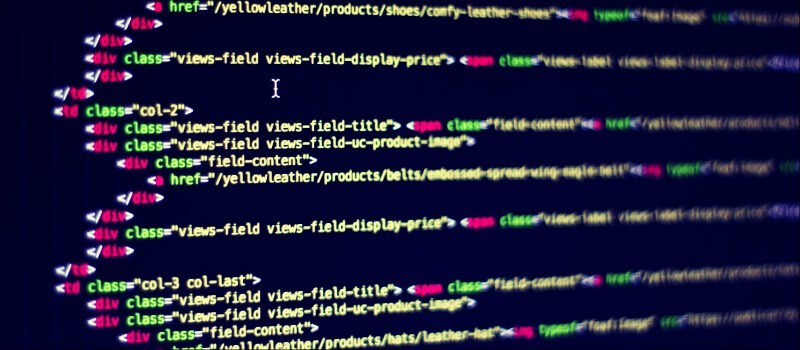

Objetivo General
Nuestro objetivo, es poder realizar software adaptándose a las peticiones y requisitos de los clientes, no importan los que sean
Mision
Somos una empresa de desarrollo de software por encargo, garantizando la calidad del producto a través de rigurosos procesos de pruebas dentro de lo que nos es posible, que mejora cada vez más sus métodos en el desarrollo de software con cada encargo, con el fin de apoyar a nuestros clientes a facilitar su forma de vida a través de la tecnología a través del desarrollo de todo tipo de software para todo tipo de propósitos.
Vision
Ser una empresa experta en desarrollo de software por la calidad y eficaz manera de desarrollar aplicaciones que ayudan a nuestros clientes a facilitar su forma de vida, puesto que pensamos a futuro y damos mayor atención al proyecto al enfocarnos con pocos proyectos a la vez, esto para brindar una mejor experiencia, por lo cual nos consideran originales al momento de desarrollar una aplicación y expertos en el tema que promueven el respeto, la colaboración, la responsabilidad, la pasión e integridad.
Valores
1Respeto: Este principio establece el deber de tener consideración y dirigirse con amabilidad a cada individuo dentro de la empresa
2Colaboración: Este mérito declara que cada individuo debe ayudar y servir a los demás individuos para así, trabajar en conjunto y aspirar a productos de calidad.
3Responsabilidad: Este valor establece que cada individuo debe optar por una actitud comprometida con el trabajo.
4Pasión: Este principio establece que cada individuo debe laborar con energía e iniciativa para mantener la calidad del producto.
5Tolerancia: Este valor dicta que se debe tener paciencia a cada individuo de la empresa.
6Honestidad: Este principio indica que cada integrante de la empresa debe actuar con transparencia, sinceridad y franqueza.
Objetivos
1Desarrollar un sistema que siga las metodologías agiles del desarrollo de software.
2Buscar y entender las necesidades de los usuarios
3Crear una aplicación moderna y agradable.
Estrategias
1Buscamos entender tu visión y necesidades para hacerlas nuestras
2Trabajamos contigo para diseñar una solución pensada en ti y tus usuarios.
3Desarrollamos tu sistema siguiendo metodologías ágiles de desarrollo de software

Regresa al iniciar